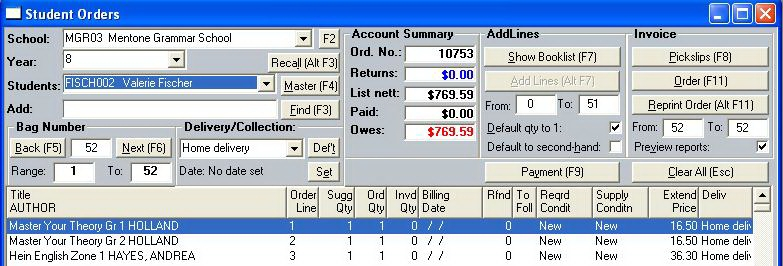

Before you accept student orders, the school should have signed off on the book-list and it should have been re-sequenced.
Displaying a students booklist
Select the School and Year from their respective combo boxes. The Students combo box will then fill with that year's students. Select a student from the combo box to view that student's booklist.
Shortcut: With the School and Year fields empty ( you can use the Clear All button to empty them), you can enter the student's customer key in the Search field (doubles with the Add field) or press the Find button. The program will load the school, year and student automatically.
Shortcut: The Recall (Alt F3) button will load the last customer that was accessed anywhere in the program.
Alternative navigation: Each School/Year has its own Bag No. sequence, starting with 1. After the school and year have been selected, you can navigate through each student in that year using the Next (F6) or Back (F5) buttons. Or you can type in the number of a specific bag.
Adding a Student
After the school and year have been selected, enter the student's customer key in the Add field or press the Find (F3) button.
The student will be added to that school/year and the window showing booklist will be displayed. Select all or some of the items from the booklist and press the OK button.
The student will be assigned the next available Bag No.
If you wish you can defer adding items from the booklist by pressing the Cancel button in the booklist window. In this case, the student is still added to the school/year but the bag number will be set to zero. When you do later add items from the booklist (click the Show Booklist (F7) button, the system will then set the bag number.
Shortcut: You can also add lines from the booklist using the Add Lines (Alt F7) button. This will add all lines in the range nominated in the From and To fields situated below the button. The fields default to the full range.
If the Second-hand check-box is checked, all items ordered for this student will show a preference for second-hand. To set the preference on the basis of individual items, read on.
If the Default qty to 1 check-box is unchecked Bookscan will demand a Requested Quantity for each item that the student has ordered. If it is checked, orders against a suggested quantity of 1 will be skipped. (The suggested quantity is set during the book-list creation process.)

Notice that the left-hand list cites "Order Line" rather than Sequence Number. The order-line has a parallel role (identifying an item's position in the list) and is regenerated when the list is re-sequenced. But it is an integer (for ease of reference) and there are no order-line numbers for comments. The order-line number is the main means of referring to book-list items from this stage of pre-pack processing forward.
The Account Summary will show how much the student Owes. That amount is nett of school discount and textbook rebate. But it is based on the price of new goods, even if the student has nominated some second-hand. If he comes to be invoiced for a second-hand item, the relevant price-adjustment will come into force.
Payments
If you are taking deposits/payments while entering the student's order, the F9 key will allow you to record the amount details. The amounts may be split into two components - received amounts and/or amounts credited to the student through the school's having awarded him an EMA (Education Maintenance Allowance - a NSW Government benefit) amount. EMA amounts are deducted from the student's bill but must be collected from the school. The amounts concerned show up in the Levies & Allowances report.
Editing
Each item's quantity-requested and state-of-repair preference can be edited by double-clicking its row in the lower, right-hand window-pane.
Deleting students
As long as they have yet to be invoiced, Students can be removed using the right mouse-button's pop-up menu. Bookscan will try to correct gaps in the Bag No. sequence. A student can subscribe to more than one book-list.